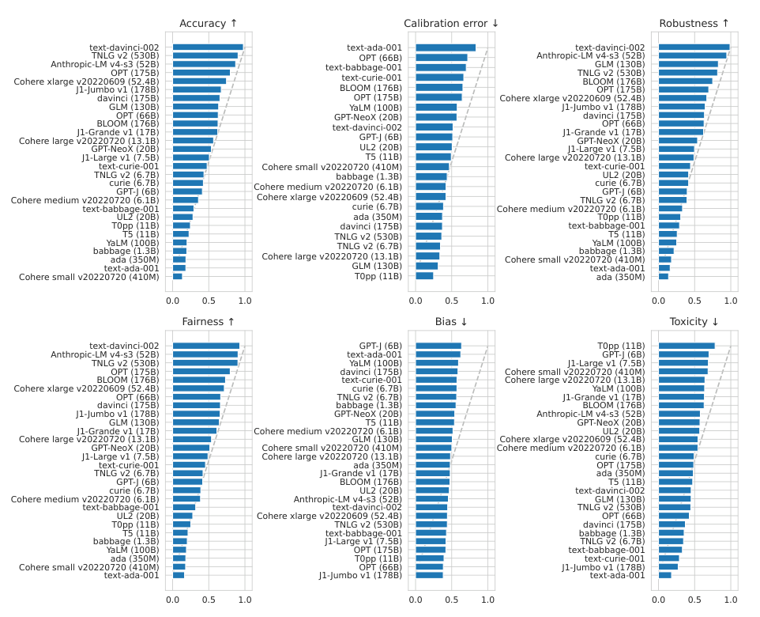

HELM's team stopped ranking models by mean win rate
Stanford's HELM team ranked its leaderboard by a count of head-to-head wins, then dropped the number after the same results kept reordering under other defensible choices.
Why this matters
You keep meeting language models ranked against each other. One is "state of the art on HELM," another is "#1 on the HELM leaderboard," and the rank is meant to settle which model is better. HELM is a real and careful benchmark from Stanford, and the rank is a real number. This lesson shows how that number is built, from a grid of separate measurements down to one column, and what the grid disagrees about that the column hides. By the end you will be able to say what a HELM rank does and does not compare, and why the same underlying results can put a different model on top.
- 01
- MMLU: one of the capability tests HELM runs and reports as a scenario.
- 02
- Calibration error: the metric behind HELM's calibration axis, and why lower is better.
What a HELM rank sits on top of
HELM is the Holistic Evaluation of Language Models, published in 2022 by Percy Liang and more than fifty coauthors at Stanford's Center for Research on Foundation Models, the group most people mean by "CRFM." It ran 30 language models through the same tests and put them in order on a public leaderboard.1
The tests are 42 scenarios. A scenario pairs a task with a domain and the group of people the text is about, so "answer questions about a passage" becomes a specific scenario once you fix which passages and whose language. Sixteen of the 42 are core scenarios and 26 are targeted at one skill. For each model on each core scenario, HELM measures up to seven things: accuracy, calibration, robustness, fairness, bias, toxicity, and efficiency. Not every metric applies to every scenario, so the seven are all measured about seven times in eight.1
Every model met every scenario the same way. HELM placed five worked examples in the prompt before the real question, held those five fixed across the questions in a scenario, and re-ran each scenario three times drawing a different five. That single procedure is what lets the 30 models be compared at all.1
The output of all this is a grid. One cell holds one model's score on one metric in one scenario. The paper is deliberate that this grid, and not any single figure, is the model's result: it assigns "a score matrix to each model" rather than a score.1 A leaderboard cannot show a grid, so it sorts by one column laid on top of it. The board that still presents the original 2022 evaluation, HELM Classic, orders its models by a single figure called the mean win rate, and that column is what a "#1 on HELM" claim points at.2
Mean win rate is a count of pairwise wins
You cannot average the seven metrics into one score directly, because they are not on the same scale and do not even point the same way. Accuracy is a fraction where higher is better. Calibration is an error where lower is better. Efficiency is a time in seconds. CRFM calls averaging numbers like these together "dubious semantically," and ranks by counting comparisons instead.3
The fraction of times a model obtains a better score than another model, averaged across scenarios.3
To compute it for one model, take another model and one scenario, and give the point to whichever scored better on that scenario's metric. Do that for the model against every other model on every scenario. Its mean win rate is the share of those matchups it won. A rate of 1.0 means it beat every model on every scenario. On accuracy, text-davinci-002 is the clear leader, winning more than nine of every ten of its comparisons.1
A mean win rate is computed from the grid, so it can say nothing the grid does not, and the grid holds seven separate opinions that need not agree. The paper's own authors decline to reduce a model to one number. They "leave the question of aggregating model performance to a single number ... to future work" and add that they "do not believe there exists a universal aggregation that satisfies all preferences." The leaderboard picks one anyway.1
Each axis reorders the same models
Compute the win rate on one metric at a time and each metric hands you a different order. Figure 26 of the paper prints six of these rankings side by side, the same 30 models sorted six ways.1

Three of the six panels barely differ. The paper reports that accuracy, robustness, and fairness are "extremely strongly correlated" across scenarios. A model that is accurate tends to be robust and fair too. Ranking on any of those three leaves the order about where accuracy put it.1 The loose version of the complaint against HELM is that dropping any axis scrambles the ranking. Drop robustness or fairness and it does not, and that is why CRFM later felt free to drop them.
The axes that move the order are the ones that do not track accuracy: toxicity, bias, and calibration. On toxicity and bias, lower is better, so the model at the top of those panels is the worst one. Watch two models. T0pp (11B) sits at the top of the toxicity panel, the most toxic model measured, and near the bottom of the bias panel, among the least gender-biased. davinci (175B) does the reverse: near the bottom on toxicity, and high on bias among the most biased. The same two models trade ends of the table when you switch which axis you rank on.1
Calibration is stranger, because it can reorder models by scenario rather than by model. Calibration measures whether a model's stated confidence matches how often it is right, and lower error counts as better. Across the 30 models, on one commonsense-question scenario, OpenBookQA, the more accurate models are also the better calibrated. On another, HellaSwag, the more accurate a model is, the worse its calibration. So even a single axis can put the models in opposite orders depending on which scenarios you average over.1
The leader can move when a rival leaves
The order also depends on which models are in the room, because a win rate is measured against exactly the other models present. CRFM says so in plain terms: a mean win rate "cannot be interpreted in isolation and depends on the full set of models in the comparison set."3
An independent team at IBM Research studied HELM from the outside and found how far that reaches. They report that "a benchmark leader may change by merely removing a low-ranked model from the benchmark." The model on top can change without anyone touching the model, only the company it was scored against.4
Two smaller dependencies run the same way. The win rate is sensitive to how the arithmetic handles ties: HELM's own changelog records a correction, "Fix incorrect handling of ties in win rate computation," which moved the published numbers after the fact.5 The rank also depends on how much you run. HELM's own tutorial for placing a model on the board uses the IBM team's method. Running just 10 examples per scenario, it notes, recovers a rank only to within about five positions, at 95% confidence, while cutting the compute by a factor of 400. Five positions of a leaderboard rank are an artifact of the sample size.6
HELM dropped the axes, then the number
CRFM did not defend mean win rate to the end. It changed the leaderboard twice, each time moving away from the single number. In December 2023 it launched HELM Lite: 30 models on 10 scenarios, one random seed instead of three, and only capability tests kept.5 It dropped the robustness and fairness perturbations, calibration, and perplexity. The stated reason for dropping robustness and fairness was the correlation from the panels above: they tracked accuracy, so measuring them apart added little.3 That reason is honest but not a law. The paper flags that the correlation is itself "a finding contingent on how we chose to measure robustness/fairness," worst-case over mild typo-style perturbations. A different measurement could weaken it. Even the ground for simplifying is a choice.1
HELM now runs many boards rather than one. Capabilities, Lite, Classic, and Safety sit beside domain versions for medicine and vision, and each carries its own ranking column computed its own way. The "one HELM number" a claim quotes is really one of several.7
Then, in March 2025, HELM Capabilities stopped ranking by mean win rate at all and switched to a mean score. CRFM gave two reasons, and both have already appeared above.
This change is motivated by the fact that the mean win rate is 1) dependent on the set of models being compared, and 2) sensitive to small variations in scenario scores that invert ranks.8 CRFM, Announcing HELM Capabilities (2025)
None of this makes the ranking worthless, and HELM never said it was. The same paper that refuses a universal score calls single-number metrics "reductive" yet "useful practical tools to simplify decision-making," and CRFM still builds and publishes the boards.1 The claim that survives is the narrow one. A HELM rank is a summary of choices about which scenarios count, which metric you sort on, and which models share the board. Read it as the output of those choices, because that is what it is.
The takeaway
A HELM rank is a mean win rate: the share of head-to-head comparisons a model wins, averaged across scenarios. That number is read off a grid of per-metric, per-scenario scores, and it can say nothing the grid does not. The grid disagrees. Rank on accuracy and the order is one thing. Rank on toxicity, bias, or calibration and the same models move, because those axes do not track accuracy the way robustness and fairness do. Change which models share the board and the leader itself can change. HELM's own team made three of these choices differently over three years and, in 2025, dropped mean win rate for the two flaws this lesson traced. So when you read "#1 on HELM," ask which board, which metric, and which models it was measured against. The rank compares those choices as much as it compares the models.
- 01
- Holistic Evaluation of Language Models: the HELM paper, for the metric definitions and Figures 24-26 in full.
- 02
- The Order of Things: Malcolm Gladwell on how college and car rankings flip when you change the weights.
Sources
- Stanford CRFM · Holistic Evaluation of Language Models (Liang et al., 2022)
- Stanford CRFM · HELM Classic leaderboard
- Stanford CRFM · Announcing HELM Lite
- Perlitz et al. · Efficient Benchmarking (of Language Models)
- Stanford CRFM · HELM changelog
- Stanford CRFM · Get Your Model's Leaderboard Rank
- Stanford CRFM · HELM leaderboards
- Stanford CRFM · Announcing HELM Capabilities